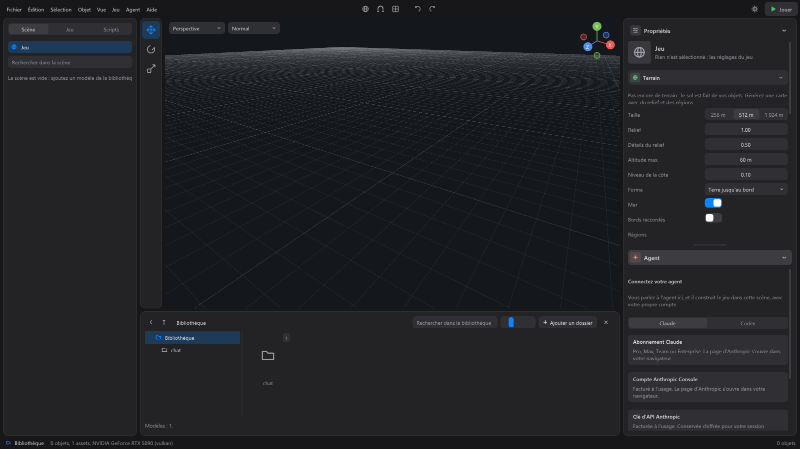

L'agent¶
L'agent est un assistant IA qui construit votre jeu dans l'éditeur. Vous lui parlez dans le panneau Agent, en bas de la colonne de droite ; il agit sur la scène ouverte, sous vos yeux. « L'agent modifie cette scène sous vos yeux, et vous pouvez tout annuler. »
C'est votre agent : Claude (le programme Claude Code d'Anthropic) ou Codex (d'OpenAI), lancé par l'éditeur avec votre propre compte. L'éditeur ne voit jamais vos identifiants. L'agent n'a que les outils que l'éditeur lui donne : il ne peut ni lire vos fichiers, ni lancer des commandes sur l'ordinateur. La liste complète de ce qu'il sait faire est dans Ce que fait l'agent.
Se connecter¶

Au premier lancement, le panneau affiche Connectez votre agent.
- Choisissez l'agent : Claude ou Codex.
- S'il n'est pas installé, le panneau le dit (« Il faut d'abord installer Claude Code, le programme d'Anthropic qui relie l'éditeur à votre compte. »). Installer lance l'installateur officiel de ce programme. Voir la page d'installation ouvre sa page dans le navigateur, et Vérifier de nouveau cherche à nouveau le programme. Codex demande Node.js pour s'installer.
- Choisissez comment vous connecter :
Pour Claude :
| Choix | Pour qui |
|---|---|
| Abonnement Claude | Pro, Max, Team ou Enterprise. La page d'Anthropic s'ouvre dans votre navigateur. |
| Compte Anthropic Console | Facturé à l'usage. La page d'Anthropic s'ouvre dans votre navigateur. |
| Clé d'API Anthropic | Facturée à l'usage. Collez la clé, puis Utiliser cette clé : elle est conservée chiffrée pour votre session Windows. |
| Bedrock, Vertex ou Foundry | Utilise la configuration déjà présente sur cette machine, comme dans VS Code. Sans configuration, le panneau le dit : définissez les variables du fournisseur, puis relancez l'éditeur. |
Pour Codex :
| Choix | Pour qui |
|---|---|
| Compte ChatGPT | Plus, Pro, Business ou Enterprise. La page d'OpenAI s'ouvre dans votre navigateur. |
| Clé d'API OpenAI | Facturée à l'usage. Codex la conserve lui-même, pas l'éditeur. |
Avec un choix par le navigateur, le panneau affiche « En attente de votre navigateur… » : terminez la connexion dans la page qui vient de s'ouvrir, le panneau se met à jour tout seul. Annuler renonce. En cas d'échec, le panneau dit pourquoi, et Réessayer recommence.
Mettre à jour l'agent¶
Un modèle récent demande souvent une version récente du programme de l'agent. L'éditeur lit cette version à chaque connexion, et la reconnaît aussi dans la réponse d'un modèle qui refuse une version trop ancienne. Le panneau affiche alors « Claude Code doit être mis à jour pour ce modèle. », avec la version qu'il faut et celle qui est installée.
- Mettre à jour lance la mise à jour officielle (pour Claude, c'est
claude update; pour Codex, son installation, qui pose la version vérifiée par WorldMint). Le panneau montre qu'elle travaille, relit la version, puis reconnecte l'agent, sans fermer l'éditeur. Il ne reste qu'à renvoyer votre message. - Si elle échoue, le panneau dit quoi faire. Le plus souvent, le fichier du programme est ouvert ailleurs : fermez l'application Claude (sur le bureau), VS Code et les terminaux où Claude Code tourne, puis cliquez de nouveau sur Mettre à jour. Vous pouvez aussi taper
claude updatedans un terminal. - Détails techniques montre le texte exact du problème et ce qu'a écrit la mise à jour, à copier dans une demande d'aide.
- À la connexion, Continuer sans mettre à jour garde la version installée : les modèles qui en demandent une plus récente refuseront de répondre, et le panneau proposera de nouveau la mise à jour.
La version connue dont Claude a besoin est rangée dans le fichier config/agents.json, à côté de l'éditeur (minimumVersion). L'éditeur retient aussi celle que demande le modèle, même plus récente.
Parler à l'agent¶
Une fois connecté, le haut du panneau montre l'agent et votre compte (par exemple « Claude · Max »), avec deux boutons : + (Nouvelle conversation) et la roue dentée (Réglages de l'agent).
Une conversation vide propose trois idées : « Quels modèles sont dans ma bibliothèque ? », « Décris ce qu'il y a dans cette scène », « Que sais-tu faire dans cet éditeur ? ». Un clic en envoie une.
La zone de saisie (« Décrivez ce que vous voulez construire… ») :
- Entrée envoie le message ; Maj+Entrée va à la ligne. Le bouton rond, à droite, envoie aussi (Envoyer (Entrée)).
- Pendant que l'agent travaille, ce bouton devient un carré : Arrêter l'agent. La réponse est alors marquée « Interrompu. ».
- Au-dessus de la zone, « Sélection : Porte » rappelle ce qui est sélectionné dans la scène : l'agent le sait aussi. Vous pouvez donc dire « agrandis celui-ci ».
- Écrire le chemin d'un dossier de votre ordinateur dans un message l'ajoute à la bibliothèque, pour que l'agent puisse s'en servir.
Dans un projet, il y a une seule conversation pour tout le jeu : l'agent passe d'une scène à l'autre sans la perdre, et elle est gardée quand vous fermez l'éditeur.
Joindre des fichiers¶

Le trombone (Joindre une image, un PDF ou un texte (ou glissez-le ici)) propose :
- Un fichier de l'ordinateur… : une image, un PDF ou un texte ;
- Une capture de la vue 3D : ce que montre la vue, pour montrer à l'agent ce que vous voyez ;
- L'image copiée (Ctrl+V dans la zone de saisie) : une capture d'écran, une image copiée d'un site.
Vous pouvez aussi glisser un fichier depuis l'explorateur Windows sur le panneau Agent. Les fichiers joints s'affichent en vignettes au-dessus du texte ; la croix d'une vignette la retire, un clic l'ouvre en grand. Limites : dix pièces jointes par message, un PDF de 20 Mo au plus, un texte de 200 Ko au plus. Codex ne lit pas les PDF : joignez plutôt une image ou un texte.
Le modèle et l'effort¶
Sous la zone de saisie, deux listes discrètes :
- Le modèle qui répond : Par défaut (celui que choisit votre agent), ou pour Claude Opus 5.5, Sonnet 5.5, Haiku 5.5, Fable 5.1.
- L'effort de réflexion : « plus il est haut, plus l'agent réfléchit avant d'agir, et plus il est lent ». Pour Claude : Low, Medium, High, Extra high, Max ; pour Codex : Minimal, Low, Medium, High.
Le changement s'applique au prochain message.
Pendant qu'il travaille¶
- « Réfléchit… 12 s » indique qu'il avance, avec le nombre de jetons de sa réflexion.
- Ses actions s'affichent en groupes repliés, chacune par une courte phrase : « Lecture de la scène », « Création d'objets (5) », « Essai du jeu »... Un clic ouvre le groupe. Un refus reste visible sans ouvrir le groupe.
- Son plan reste affiché en haut de la conversation pour un travail long : l'étape en cours, et le nombre d'étapes faites. Un clic montre toutes les étapes, et les preuves données pour chacune.
- S'il ne donne plus de nouvelles pendant un moment, le panneau le dit : il travaille peut-être encore, et le bouton carré l'arrête.
Sous chaque réponse : sa durée, le nombre d'actions, le coût si votre compte est facturé à l'usage, et Annuler ces modifications, qui défait d'un coup tout ce que l'agent a changé pendant ce tour. Ses changements s'annulent aussi un par un avec Ctrl+Z.
Copier : glissez sur le texte d'un message pour le sélectionner (un double-clic prend un mot), puis Ctrl+C ou clic droit > Copier. L'icône Copier le message, au survol, copie un message entier. Les liens s'ouvrent d'un clic.
Les réglages de l'agent¶
La roue dentée du panneau (ou Agent > Réglages de l'agent). Retour revient à la conversation.
| Section | Ce qu'on y trouve |
|---|---|
| Compte | Le choix Claude / Codex, le compte connecté (« Connecté : ... »), Changer de connexion, et Se déconnecter (ou Oublier cette connexion), à confirmer par Confirmer la déconnexion. Attention : se déconnecter vaut pour tout l'ordinateur, pas seulement l'éditeur. |
| Modèle | Le modèle qui répond. |
| Effort de réflexion | Le niveau de réflexion. « Le changement s'applique au prochain message. » |
| Programme | Le chemin du programme de l'agent. Vide : l'éditeur le trouve seul (« Détection automatique : ... »). |
| Règles de l'agent | « L'agent suit la méthode livrée avec l'éditeur : un plan, un jeu jouable à chaque étape, et des preuves. » Personnaliser pour ce projet crée un fichier AGENT.md dans le projet, que vous pouvez modifier ; ensuite, Ouvrir les règles de ce projet l'ouvre. Voir Le guide de l'agent. |
| Autre agent | « Un autre agent peut se connecter à l'éditeur depuis votre terminal. Il garde alors ses propres outils : ne le faites que si vous lui faites confiance. » Autoriser l'agent ouvre l'accès ; Copier la commande copie la commande à lancer dans le terminal. Elle contient une clé d'accès : ne la partagez pas. |
Ce qu'il sait faire¶
L'agent construit des mondes (terrain, eau, végétation, objets posés au sol), place le joueur et règle ses animations, active et règle les systèmes de jeu, écrit des scripts, crée des scènes et les relie, essaie le jeu sans fenêtre pour vérifier qu'il se joue, regarde la scène en image, et exporte le jeu. Il suit une méthode : il présente un plan pour une grande demande, garde le jeu jouable à chaque étape, et donne des preuves.
- La liste de ses outils : Ce que fait l'agent.
- Sa méthode : Le guide de l'agent.
- Ce qu'il sait de chaque système : la référence des systèmes.